Coffee
Communicating sourcing, quality and the value behind the product more clearly.
Selected Academic Work · 2022–2026
Campaign Strategy · Visual Communication · Graphic Design · Information Design
A selection of work exploring how research, strategy and visual design can shape the way brands communicate with their audiences across digital and physical media.
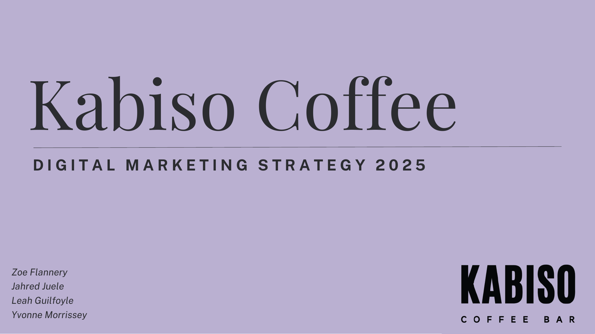
Focus
Branding & Digital Marketing
Work
Strategy · Campaigns · Visual Design
Context
University Projects
Skills
Research · Content · Layout · Information Visualisation
Kabiso Coffee
A collaborative digital marketing project developing a campaign strategy for Kabiso Coffee at the University of Limerick.
The project explored how Kabiso could communicate the value behind its premium pricing while strengthening its connection with students and everyday campus life.
Rather than focusing only on promotional content, our approach connected audience research, brand positioning, digital strategy and visual communication into one campaign direction.
Research & Audience
Research helped us examine how Kabiso was perceived and identify the audience needs that should influence the campaign. This informed personas, the customer journey and the wider communication strategy.
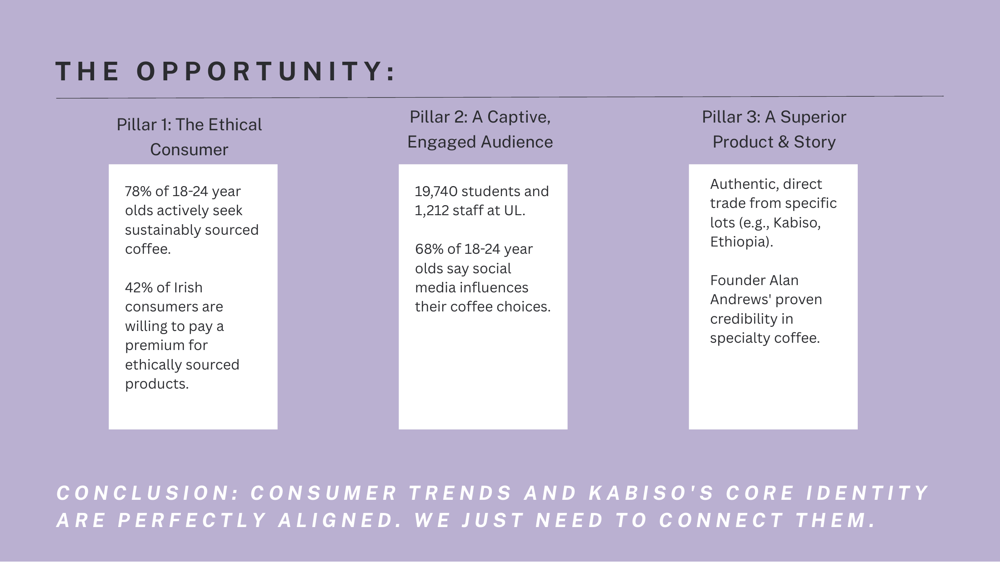
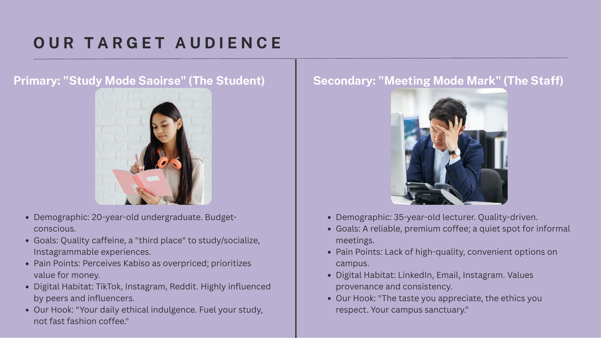
From the Strategy Report
Personas helped translate research into more tangible audience profiles and provided a clearer reference point when considering messaging, channels and campaign content.
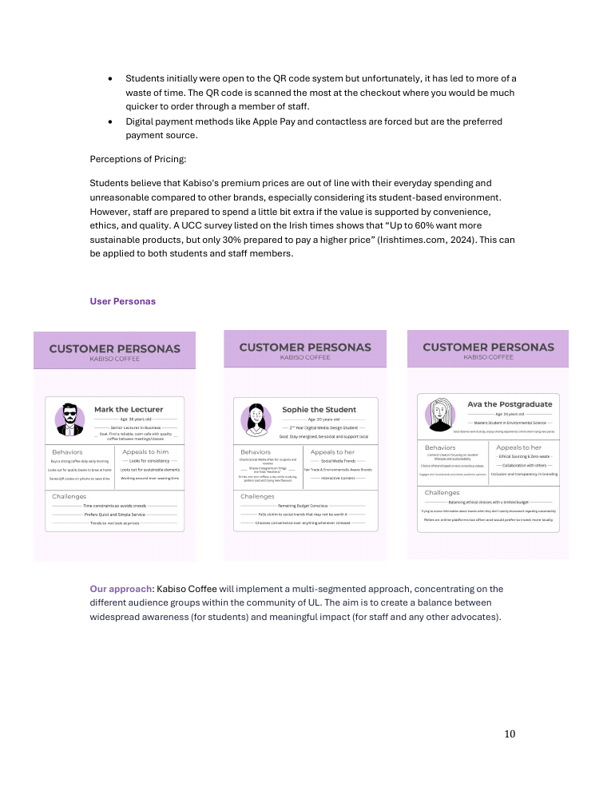
Customer Experience
The strategy considered the wider customer journey: how someone might first encounter Kabiso, evaluate the brand, make a purchase and eventually become a returning customer.
Mapping these stages helped connect marketing activity with the actual experience of discovering and interacting with the brand.
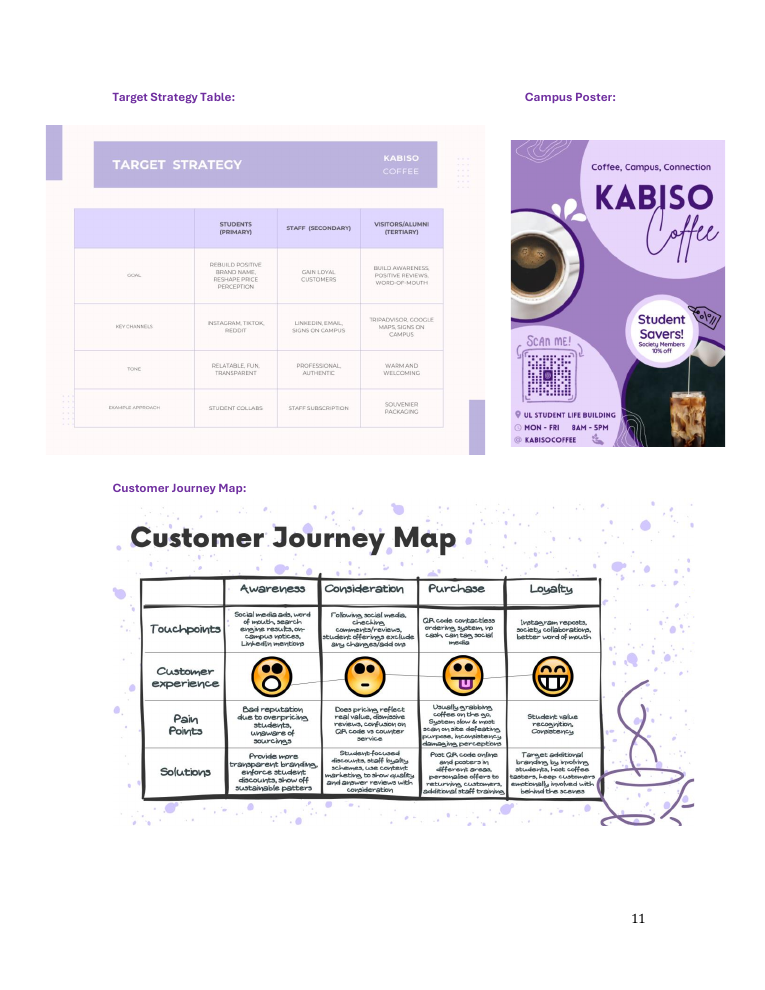
04 · Campaign Concept
The campaign was designed to position Kabiso as more than a place to buy coffee — connecting product quality with UL campus culture and opportunities for genuine community interaction.
Communicating sourcing, quality and the value behind the product more clearly.
Connecting the brand with student culture, societies, creativity and everyday campus life.
Creating digital and physical moments that encourage interaction and build a stronger sense of community.
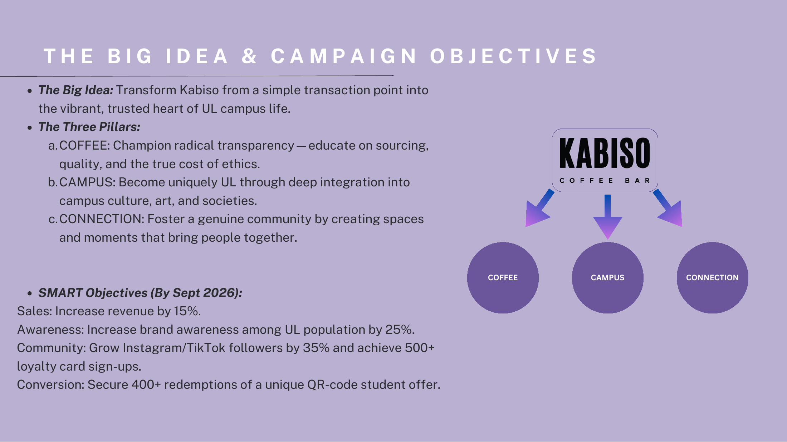
Digital Strategy
The proposed strategy combined social content, search, discoverability, partnerships and physical activation rather than relying on a single channel.
A visual community hub for products, campus content and brand storytelling.
Authentic short-form content designed around reach, personality and student culture.
Google Ads, local search and SEO to improve discovery at moments of higher intent.
Partnerships and physical activations connecting the digital campaign with real campus experiences.
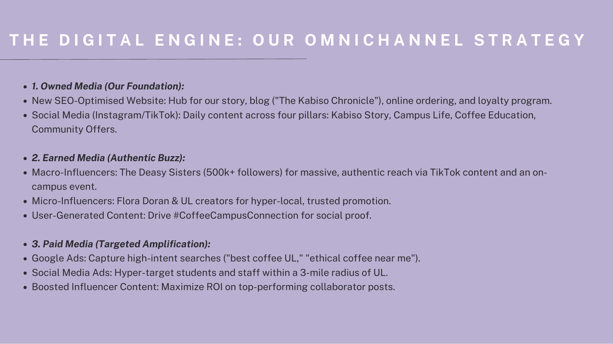
06 · Campaign Direction
The visual direction combined warmer, coffee-led imagery with a more approachable campus tone. The intention was to make the brand feel premium without making it feel disconnected from its student audience.
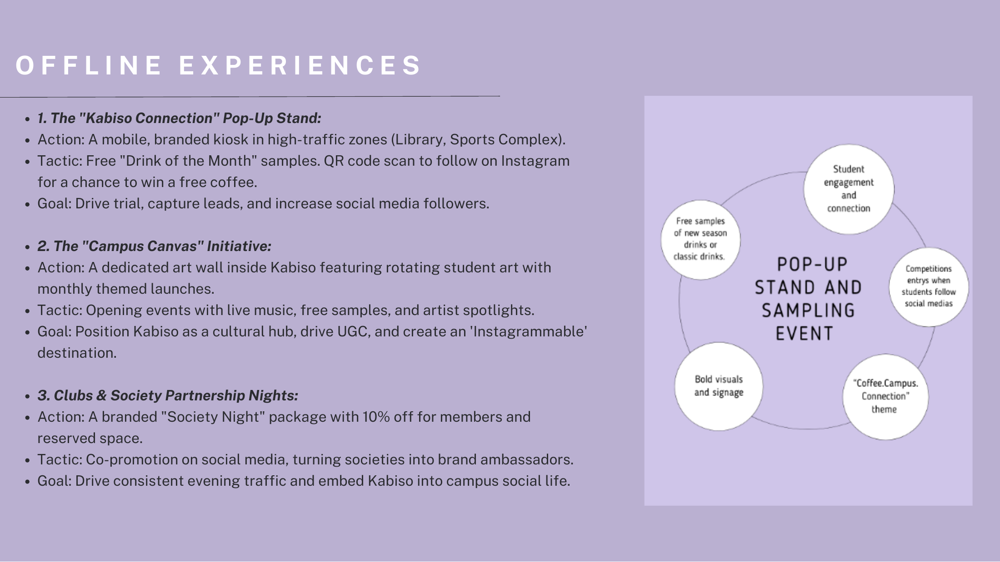
Retention & Loyalty
The strategy also considered what happens after initial awareness and conversion. Loyalty formed part of the proposed approach to encouraging repeat engagement with Kabiso.
This helped broaden the project from an advertising exercise into a more complete consideration of the customer relationship.
The campaign metrics developed during this project were proposed objectives for the strategy rather than reported campaign results.
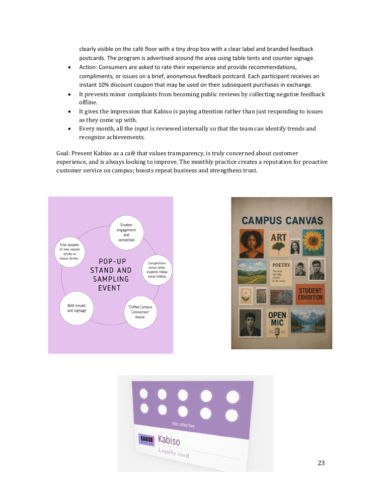
Selected Visual Design
Alongside UX and digital strategy, my degree gave me the opportunity to work across graphic design, layout, information visualisation and promotional communication. The following projects show a selection of that work.
Project GEMS · Brochure Design
A brochure and identity exercise focused on hierarchy, layout and making complex project information easier to navigate.
The project required balancing written information, diagrams and visual elements within a limited brochure format.
I explored how typography, spacing, colour and information hierarchy could make dense content feel more approachable while maintaining a consistent visual identity.
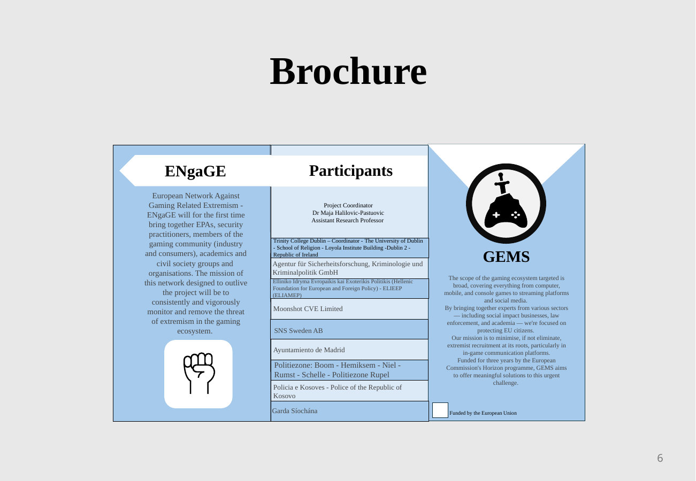
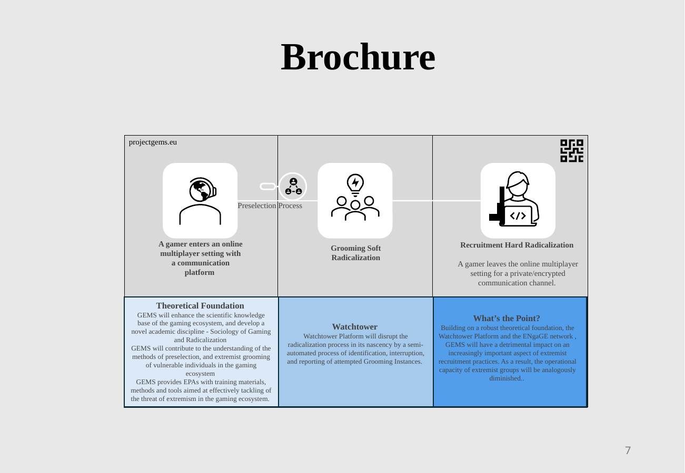
Identity Development
Logo exploration formed part of the wider visual system, helping establish consistency across the brochure and supporting material.
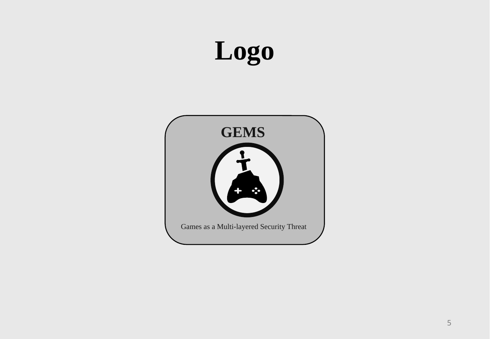
09 · Information Visualisation
These Design Visualisation exercises explored how information and abstract environmental concepts could be translated into graphics that were easier to understand at a glance.
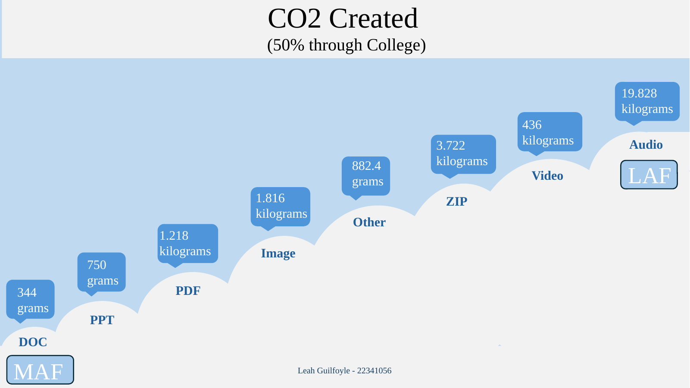
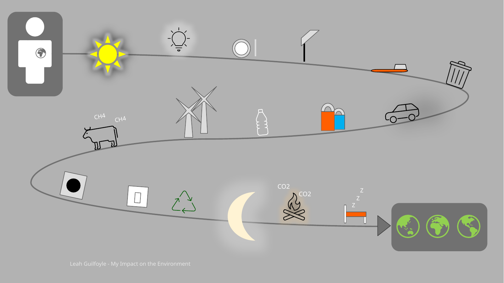
Promotional Design
A promotional design exercise exploring product imagery, typography, composition and feature hierarchy.
The piece provided an opportunity to consider how a product can remain the visual focus while supporting information is organised around it.
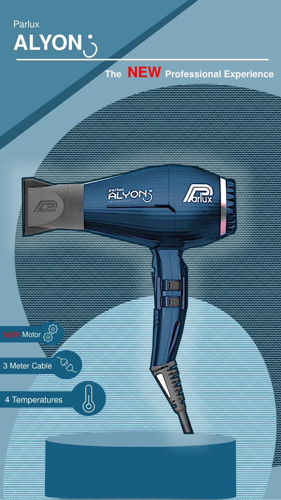
11 · Graphic Design
This academic album-artwork exercise explored concept development, typography, imagery and composition through a reinterpretation of Arctic Monkeys' AM.
Initial sketches and visual experiments were developed into a more resolved digital direction, allowing me to explore how a familiar visual identity could be interpreted through my own design process.
Academic design exercise only. This work is not affiliated with or commissioned by Arctic Monkeys.
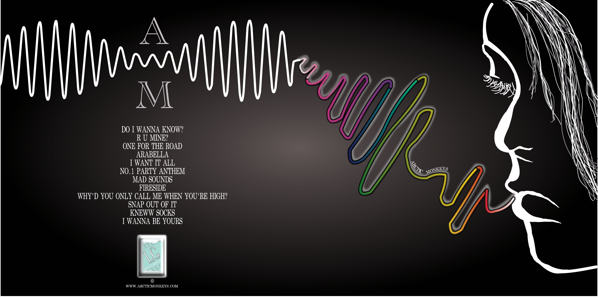
12 · Reflection
These projects strengthened my ability to move between research, communication strategy and visual execution rather than treating them as separate skills.
The Kabiso project particularly developed my understanding of how audience research and business objectives can influence campaign decisions, messaging and channel selection.
My visual-design work developed that thinking from a different direction: considering how hierarchy, composition and information design can make ideas clearer, more engaging and easier to understand.